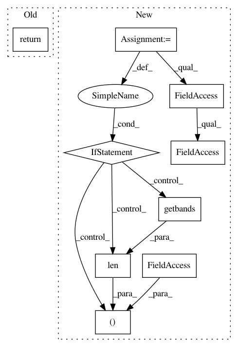

49f4e83ae4323e032bdd232e466e59b4aeceb458,dataset/batch_image.py,ImagesBatch,_additive_noise_,#ImagesBatch#Any#Any#Any#Any#,942
Before Change
self
return self._threshold_(image+noise(size=image.shape), low, high, dtype=image.dtype)
def _multiplicative_noise_(self, image, noise, low=0, high=1.):
Add multiplicativa noise to an image.
After Change
self
noise = noise(size=(*image.size, len(image.getbands())) if isinstance(image, PIL.Image.Image) else image.shape)
return self._add_(image, noise, clip, preserve_type)
In pattern: SUPERPATTERN
Frequency: 4
Non-data size: 9
Instances
Project Name: analysiscenter/batchflow
Commit Name: 49f4e83ae4323e032bdd232e466e59b4aeceb458
Time: 2018-03-28
Author: g.ivanov@analysiscenter.ru
File Name: dataset/batch_image.py
Class Name: ImagesBatch
Method Name: _additive_noise_
Project Name: analysiscenter/batchflow
Commit Name: d381fb0787395076ecb8a3bd6984f52a16793fae
Time: 2018-03-27
Author: g.ivanov@analysiscenter.ru
File Name: dataset/batch_image.py
Class Name: ImagesBatch
Method Name: image_shape
Project Name: analysiscenter/batchflow
Commit Name: 49f4e83ae4323e032bdd232e466e59b4aeceb458
Time: 2018-03-28
Author: g.ivanov@analysiscenter.ru
File Name: dataset/batch_image.py
Class Name: ImagesBatch
Method Name: image_shape
Project Name: analysiscenter/batchflow
Commit Name: 49f4e83ae4323e032bdd232e466e59b4aeceb458
Time: 2018-03-28
Author: g.ivanov@analysiscenter.ru
File Name: dataset/batch_image.py
Class Name: ImagesBatch
Method Name: _multiplicative_noise_